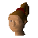
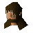
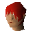

Seers' Village
Town at 2692, 3489 · Kingdom of Kandarin
Open on the world map → Open in knowledge graph → Below: Seers' Village (underground)
NPCs
| NPC | Level | Spawns | Notable drops |
|---|---|---|---|
| 2 | 1 | Coins, Herb drop table, Bolt, Fishing bait | |
| 2 | 2 | Coins, Herb drop table, Bolt, Fishing bait | |
| 2 | 1 | Coins, Herb drop table, Bolt, Fishing bait | |
 Woman | 2 | 2 | Coins, Herb drop table, Bolt, Fishing bait |
| 2 | 3 | Coins, Herb drop table, Bolt, Fishing bait | |
 Bartender | 1 | ||
 Poison Salesman | 1 | ||
| 3 |